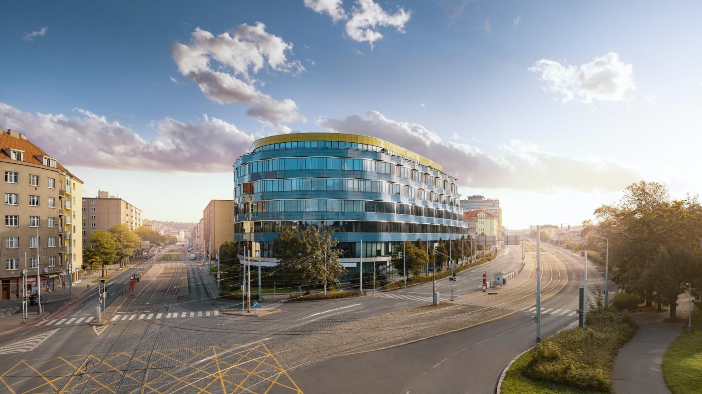

Experience Morning
every Thursday · 8:30 — 10:30
Come with your child and live a real morning at Little FLOW. Community circle, movement, a shared activity and time to explore.
Little FLOW is a kindergarten for children aged 2 to 6 in Prague 9. In a small group we create an environment where children can explore, create, investigate and learn in context.

every Thursday · 8:30 — 10:30
Come with your child and live a real morning at Little FLOW. Community circle, movement, a shared activity and time to explore.
every Monday · 10:00 — 11:30
Would you rather ask about the kindergarten, our approach, settling in or moving on to FLOW Elementary — calmly, first?
Six principles that shape everyday life at the kindergarten.
Children learn through themes and projects that connect several areas at once — language, movement, making, logical thinking and working together. A theme like “Our city” can lead from a walk around the neighbourhood through building a model to a shared presentation for parents.
Czech and English are a natural part of every day. Children meet English in play, songs, ordinary conversation and shared activities.
We introduce technology the tangible way — by building, exploring and playing, not through a screen. No tablets, no passive consumption.
Thanks to the small group we have the space to really get to know each child, to follow their pace, needs and interests, and to give them enough attention.
Little FLOW follows naturally from the environment and philosophy of FLOW Elementary. Joint events, school visits and familiar surroundings can make the move into first grade easier.
We see parents as partners. We follow each child’s development, capture their progress in a portfolio and share regularly what they are moving forward in and what we want to focus on next — through the Twigsee app and in person.
English at Little FLOW is not a subject or an after-school club. It is the day’s second language — children meet it in situations that make sense.
Morning circle in Czech, snack in English, the project block depending on the topic. A child isn’t learning vocabulary — they’re using a language because they need it right then.
Nobody is pushed to answer in English. Children understand first, then start on their own. A silent period is a normal part of the process, not a problem.
Czech stays the language a child grows up in, at home and at kindergarten. English is added on top. It works for families who don’t speak Czech at all.
A small group — no more than 12 children. We have the space to really get to know each child, their pace, needs and interests.


You’ll meet them in person at an Experience Morning — that’s exactly why we run it.
Every day is different — and that’s by design. Routines give children safety, projects give them meaning.
Morning circle, attendance, plan for the day — in Czech and English.
Creating, experimenting, collaborating.
Garden, parks, outings. Outside every day.
Yoga, dance, music, art.
Quiet activities, reading, free play.
Families joining Little FLOW now receive our Founding Family Rate — our thank-you to those who build the kindergarten with us.

Little FLOW is the kindergarten of FLOW Elementary School — the Founders’ School. We share the Balabenka campus and the same approach to learning.
Joint events, portfolios, classroom visits. Children know their future teachers and spaces long before starting 1st grade — so first grade isn’t a jump into the unknown.
Write to us and we’ll arrange a time — an Experience Morning with your child, or coffee just for you. We reply within one business day.